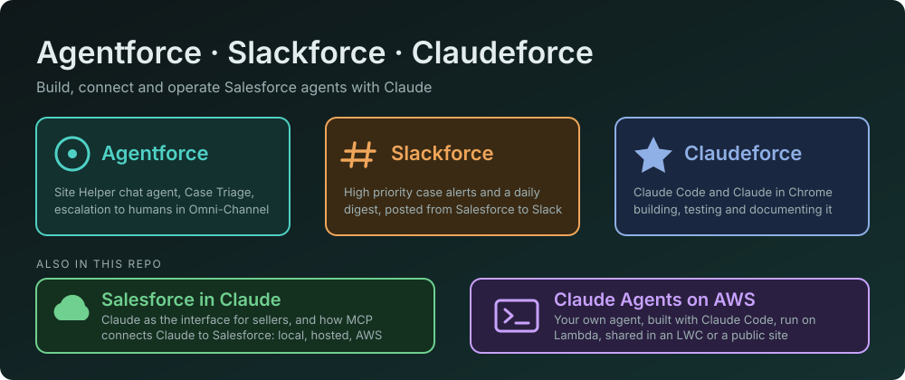

Agentforce, Slackforce, Claudeforce
A working example of Salesforce agents for self-service and human handoff, the Slack alerts around them, and how Claude built and documented it. Pick a page.

Pages
Agentforce
The Site Helper chat agent, how it escalates to a human through Omni-Channel, the internal Case Triage agent, with architecture, code and configuration.
Open agentforce.htmlSlackforce
How Salesforce posts case alerts and a daily digest to Slack, the agent-in-Slack option, and who does each setup step.
Open slackforce.htmlClaudeforce
How Claude Code and Claude in Chrome were used, where a human approved, and what went wrong along the way.
Open claudeforce.htmlSalesforce in Claude
A reference page on the beta plugin that lets sellers work with Salesforce accounts and pipeline from Claude, and how it differs from the other three.
Open salesforce-in-claude.htmlWhich one do I use?
Start from what you are trying to do, not from the product name.
Use Agentforce
- The input is free text and the right answer depends on what was said
- You want routine questions answered before they reach staff
- The person may need a human, with the chat attached
- You need to look up or change Salesforce data in plain language
Say: "I want visitors to get answers without waiting."
Use Slackforce
- Something happens in Salesforce and the team should know now
- You want a regular summary nobody has to request
- The message is the same shape every time
- One-way is enough: no reply, no buttons
Say: "Tell the team when a High priority Case arrives."
Use Claudeforce
- You are adding or changing code, agents or configuration
- You need to read and document what is already in an org
- You want tests run, failures diagnosed, docs written
- A web step needs doing, with a person approving it
Say: "Add an action to the agent and run the tests."
How they fit together
Agentforce and Slackforce run in your Salesforce org, in front of people. Claudeforce sits underneath, at build time, and never talks to customers.
Side by side
The first three do different jobs. They share one org and one Case object. Salesforce in Claude is a reference page on a separate product.
| Agentforce | Slackforce | Claudeforce | |
|---|---|---|---|
| In one line | Conversational agents that understand free text and act on Salesforce data | Automatic Slack messages when something happens in Salesforce | Claude helping people build, test and document the project |
| Who it serves | Website visitors and support staff | The support team | The developer or admin |
| What starts it | Someone sends a message | A new Case, or the clock at 8:00 | A person asks Claude to do a task |
| AI at run time | Yes, a language model reasons about each message | No. Plain Apex, the same output each time | Yes, but only while building, never in front of customers |
| Where it runs | Salesforce, in the chat on your site | Salesforce, posting to Slack | Your editor and your browser |
| Human in the loop | Hands over to a human through Omni-Channel | Humans read and act on the messages | A person approves secrets, logins, permission clicks and risky steps |
| Main pieces here | Site Helper agent, Case Triage agent, Apex actions, Knowledge, messaging channel, queue | Case trigger, digest job, notifier class, webhook label | Salesforce CLI, git, Claude in Chrome, published pages |
| Best for | Deflecting routine questions and answering in context | Making sure nothing urgent is missed | Doing repeatable build, test and documentation work fast |
| Not for | Plain notifications and fixed rules | Conversation, approvals, buttons | Secrets, production support, unreviewed production deploys |
| Status | Built. Live human handoff not run by Claude | Built and proven end to end | Used throughout this repo |
One issue through all three
- Agentforce. A visitor chats that their generator will not start and asks for a person. The Site Helper router sends the chat to Escalation and Omni-Channel puts it in the queue.
- A human. A support agent accepts the chat and opens a High priority Case.
- Slackforce. The Case trigger posts an alert to the team channel within seconds.
- Agentforce again. A teammate asks the Case Triage Assistant for the open High priority Cases and gets the list.
- Claudeforce. Claude built the agents, the Apex and the alerts, wrote the tests and documented them. It plays no part in the customer conversation.
An example flow. Each step exists, but they have not been run together as one scenario.
Common mix-ups
| You want | Use | Why |
|---|---|---|
| A notification when a Case is created | Slackforce | It is an event with a fixed message. An agent adds cost and variation for no gain. |
| Visitors to get answers without waiting | Agentforce | It needs understanding of free text, and a path to a person. |
| To change what the agent says, or give it a new action | Claudeforce, then Agentforce | Claude edits and tests it while you build. Agentforce is what runs afterwards. |
| To use the Case Triage agent from Slack | Agentforce, reached from Slack | The agent does the work. Needs the Salesforce and Slack integration, which is unconfirmed on a free plan. |
| Sellers to ask Claude about their pipeline | Salesforce in Claude | Claude is the interface and Salesforce is the data. See the reference page. It is not set up in this repo. |
| A secret entered, or a permission screen approved | You | None of the three should do this for you. |